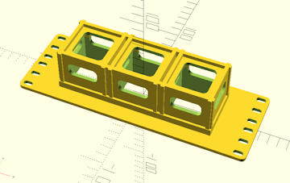
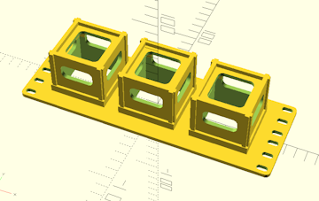

Configuration Options :: Target Device Dimensions & Count
These settings determine the size of the cage CageMaker PRCG creates based on the dimensions of the device to be caged.

Consult the manufacturer's information for the device in order to obtain its dimensions without having to measure them. Also, CageMaker PRCG does not support fractions of a millimeter in device dimensions - for measurements that are partial-millimeter, round up to the next whole number.
manual device depth
Depth (front-to-back) of the device, in mm.
manual device width
Width (left-to-right) of the device, in mm.
manual device height
Height (top-to-bottom) of the device, in mm. This should EXclude any plastic or rubber feet on the bottom of the device, which should be removed.

Please be aware that CageMaker PRCG will automatically adjust final cage heights to accommodate the size of the device to be caged plus the support structure that forms the cage proper. Height is automatically scaled by rack "units," where each "unit" of height is 1.75" or 44.45mm by default when rack geometry is set to any of the EIA-310 options. (Enabling the allow half heights option will change the height scaling to instead be multiples of 7/8" or 22.225mm for EIA-310 racks, and half of the unit height for non-EIA.)
If the width of a device, or the total combined width of a number of devices, is too large to fit within the selected rack cage width, CageMaker PRCG will display an error.
Selecting a device preset will automatically set these dimensions, and changing them here after selecting a device preset will subsequently have no effect. Be sure to remove any device preset before changing these settings.
For caging multiple smaller devices side-by-side with a number of devices setting of two or more, such as tiny-form-factor SBCs like a Raspberry Pi, swap the device height and device width setting values so that the devices are rotated 90 degrees, effectively standing them upright on their sides.
If the device is not rectangular with squared corners, it may be useful to set options such as faceplate rounded corners, extra support, and make bottom a shelf to more safely support the device.

number of devices
This setting creates multiple copies of the cage using the given device dimensions, stacked side-by-side and separated by a wall whose thickness is set by the surface thickness setting. This is useful for situations where a cage is needed to hold more than one of the same device, such as a cluster of Raspberry Pis or other SBCs.
For caging multiple smaller devices side-by-side with a number of devices setting of two or more, such as tiny-form-factor SBCs like a Raspberry Pi, swap the device height and device width setting values so that the devices are rotated 90 degrees, effectively standing them upright on their sides.

multiple device gap
Generate additional gap space between multiple devices. By default, multiple devices are separated by a wall whose thickness is set by the surface thickness setting, and this setting adds to that distance.

This can dramatically increase cage complexity, which in turn substantially increases both print time and filament consumption.

 Back To Top
Back To Top Navigate Site
Navigate Site Support This Project
Support This Project
 Community
Community
 Legal Notices & Information
Legal Notices & Information
 Copyright/Trademarks
Copyright/Trademarks